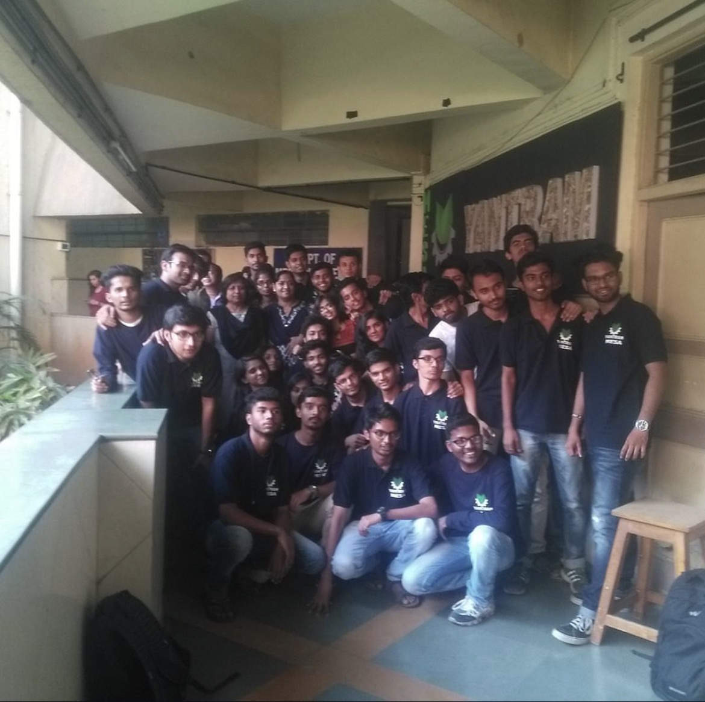
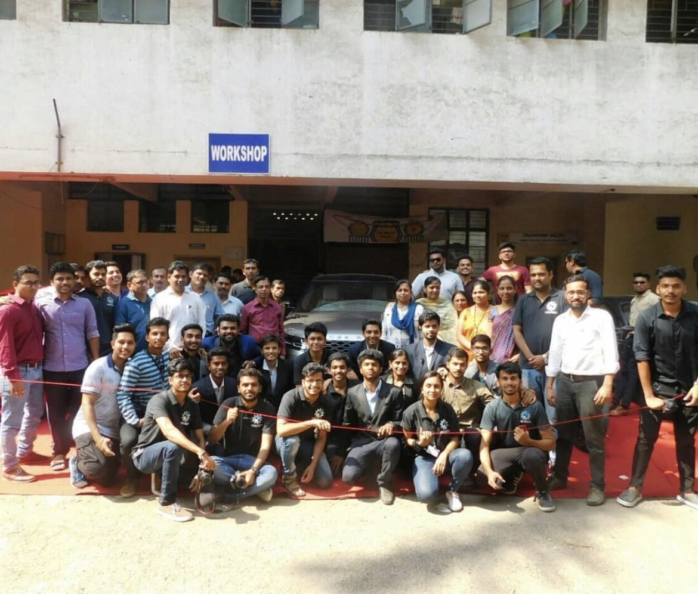
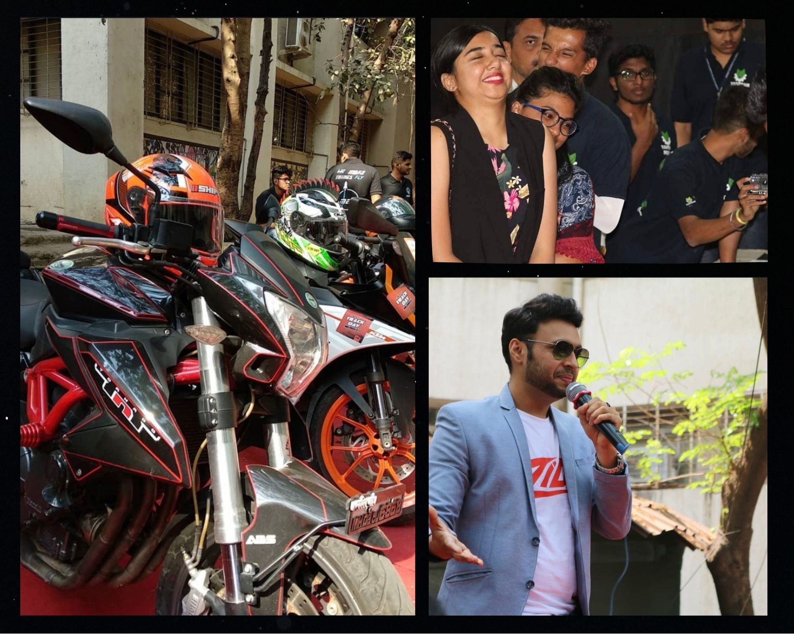
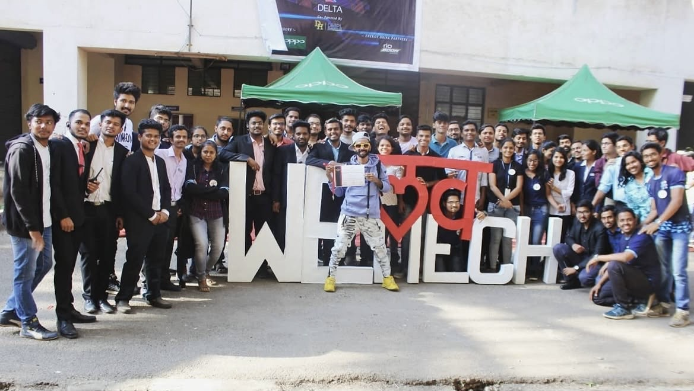
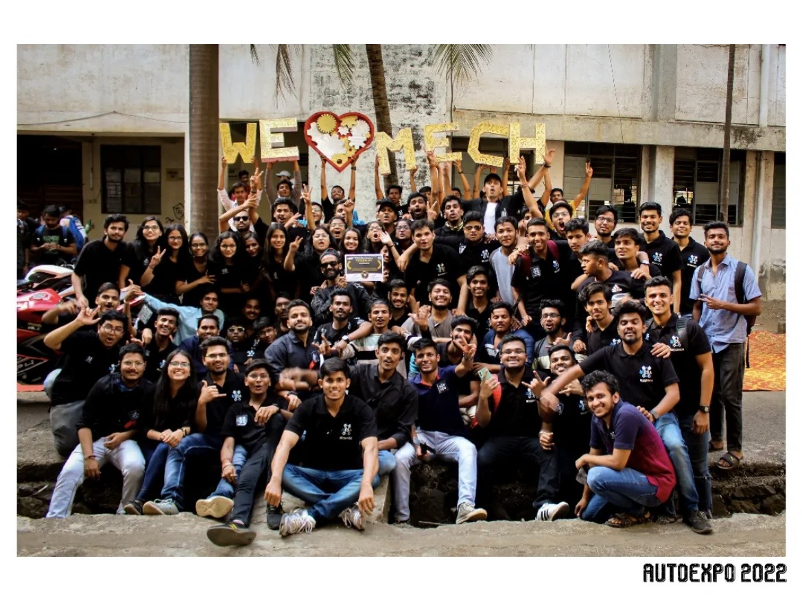
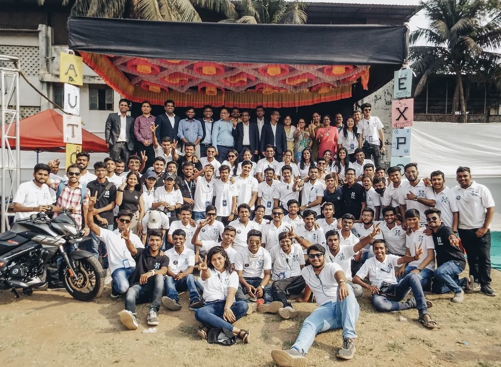
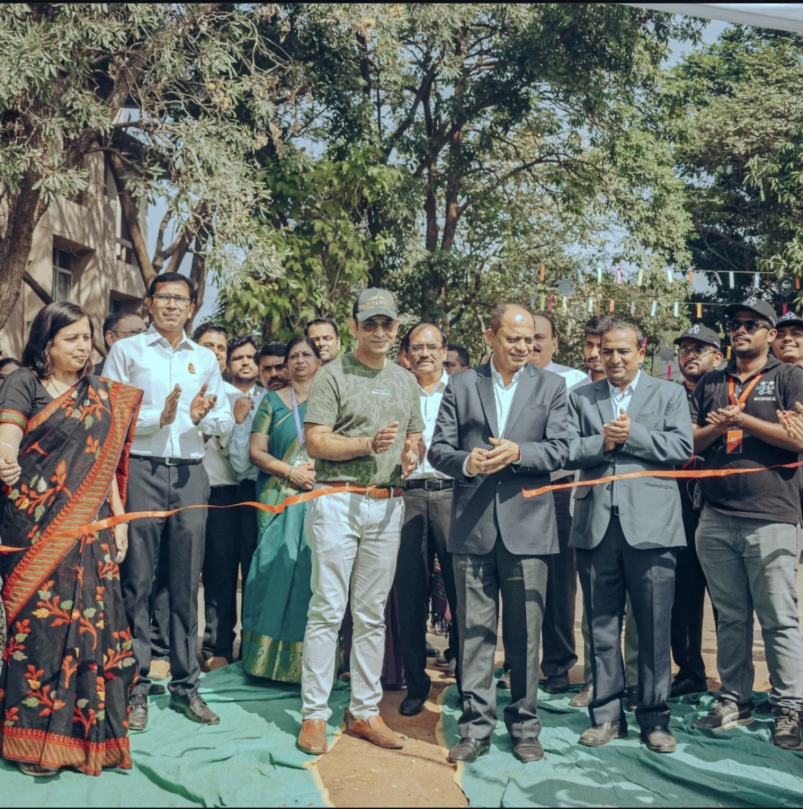
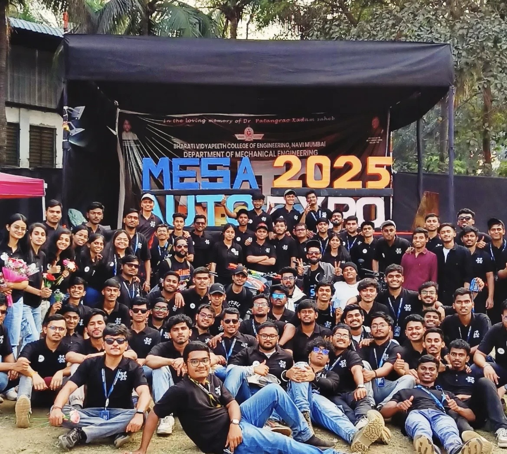
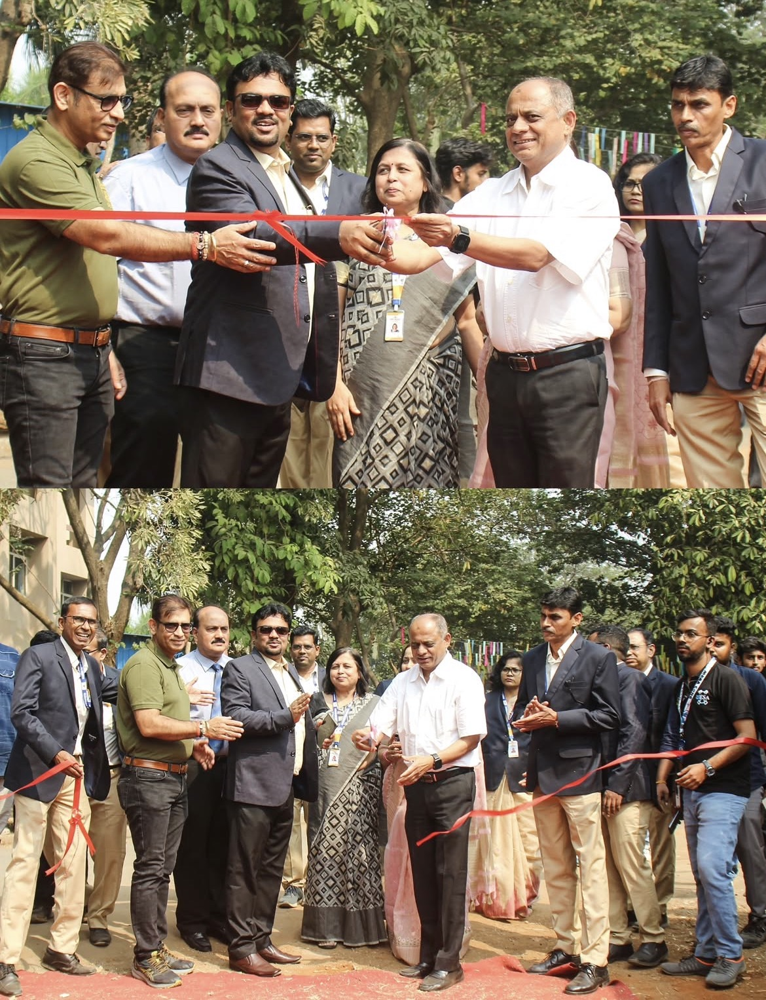

Our History
2016-2017
The Genesis & Official Identity

The 2016–2017 academic year marked a defining milestone for our association with the official unveiling of the YANTRAM - MESA logo. Setting a high benchmark for campus events, we inaugurated Yantram 2K17 with renowned digital creator and influencer Prajakta Koli (@Mostlysane) joining us as the Chief Guest. Her presence energized the grand launch, establishing YANTRAM as a flagship technical and automotive platform at BVCOE.
2017-2018
A Massive Leap Forward & The First Auto Expo

The 2017–2018 academic year marked a massive leap forward for YANTRAM. The event was inaugurated by Guest of Honour Prasad Vedpathak (Ur Indian Consumer), a proud 2012 Mechanical Engineering alumnus who returned to campus to launch the fest. Centered on an "ISRO" theme, the department featured interactive space exhibits, student rocket models, and an expert-led technical seminar. The year also witnessed the grand debut of the campus Auto Expo, inaugurated by India's first female MotoVlogger, Rider Girl Vishakha, featuring exotic cars like the Ford Mustang GT and over 400 super-bikes. Beyond technical showcases, the committee extended its impact through community drives, including a Women's Day police felicitation and a donation visit to Navnihal Balikaashram Gruh.
2018-2019
Electro-Atomic Vision & Auto Expo Scaling

The 2018–2019 academic year saw YANTRAM scale up dramatically, placing its primary spotlight on an expanded, high-octane Auto Expo 2K19. The flagship showcase was inaugurated by automotive designer and popular moto-vlogger Shariq V, drawing a record crowd of over 1,200 enthusiasts to campus. The expo featured a massive lineup of tuned vehicles and super-bikes, highlighted by a modified BMW E4, a vintage Maruti 800, custom Harley-Davidsons, and heavy-hitting performance machines like the Benelli TNT 600i (Doomzday), Ducati Diavel, BMW F 750 GS, and Kawasaki Ninja ZX-10R. Beyond the track and expo floor, the fest ran under the theme of "Atomic Energy"—featuring nuclear plant models and dual timeline exhibits—alongside social drives at Girija Welfare Association and Jeevan Jyoti Ashram.
2019-2020
Biomimetic Engineering & Auto Expo Showcase

The 2019–2020 academic year saw MESA deliver one of its most high-powered Auto Expo events to date, alongside exploring the theme of "Biomimetic" technology. The grand festival was inaugurated by Guest of Honour and television/film actress Aishwarya Pawar, accompanied by a festive Dhol Tasha performance in the campus quadrangle. The main attraction, Auto Expo 2020, was headlined by Chief Guest Oggy F—a renowned moto-vlogger, automotive reviewer, and road safety advocate with over 152k subscribers. The expo drew a massive crowd of 1,200+ students and enthusiasts who gathered to witness an extreme lineup of vehicles. Featured displays included custom-built Honda Accords, amplified boom-box Suzuki Swifts, modified off-road Jeeps, and a lineup of super-bikes featuring the BMW S1000RR, Benelli TNT 600, Ducati Diavel, Kawasaki Ninja ZX-10R, and custom Harley-Davidsons. Grounded in community welfare, MESA also conducted outreach visits to Mother Teresa's Jeevan Jyoti Ashram.
2021-2022
Post-Lockdown Revival & Grand Auto Expo Return

The 2021–2022 academic year marked a roaring return to live campus events with MESA's flagship Auto Expo 2022, inaugurated by Guest of Honour Dr. Vilasrao J. Kadam. The marquee showcase featured an impressive lineup of 23 modified cars and 80 super-bikes, highlighted by a custom Honda Accord, Ford Mustang, Jeep Thar, Kawasaki Ninja H2, Suzuki Hayabusa, BMW S1000RR, and Ducati Diavel. The event also featured a vintage-themed road safety alley, custom photobooths, and a social outreach drive supporting the Prerna Welfare Association Girl Child Orphanage.
2022-2023
Record-Breaking Auto Expo & Academic Milestone

The 2022–2023 academic year marked the biggest milestone in MESA's history, headline-driven by the 8th edition of AutoExpo 2023—their largest showcase yet. Inaugurated by College Director Dr. V. J. Kadam, the festival expanded to feature 30+ supercars and modified cars alongside 150+ performance bikes, centered around the iconic Ford Mustang GT 5.0 and thrilling professional stunt performances. Beyond the automotive spectacle, the Mechanical Engineering Department achieved prestigious National Board of Accreditation (NBA) accreditation. The year also included a mock placement drive, a pre-placement seminar on market recession with TCR Innovations, an MBA exploratory visit to ICFAI Business School, and active participation in ISHRAE and Formula SAE initiatives.
2023-2024
Advanced Tech Expansion & Nissan GTR Showcase

The 2023–2024 academic year was highlighted by MESA's inauguration of the Advanced Manufacturing Lab equipped with CNC machines and 3D printers. The main attraction, Auto Expo 2024 (sponsored by Royal Enfield), drew massive crowds with stunt displays and featured guest Imran Majid alongside his Nissan GTR, displayed alongside an Audi R8, BMW M2, Maybach, and super-bikes. The festival concluded with an evening DJ success party. On the technical front, MESA hosted YANTRAM '24, the "CAD War", a Treasure Hunt, and industry seminars covering Piping Design, CAD Modeling, and Study Abroad programs.
2024-2025
Grand Auto Expo '25 & Advanced Technical Initiatives

The 2024–2025 academic year was highlighted by Auto Expo 2025, inaugurated on founder Dr. Patangrao Kadam's birth anniversary by Dr. Vilas Kadam, Panvel RTO Prithviraj Kakade, and Reliance HR Subhash Jain. The event featured an impressive lineup including a Lexus ES, Nissan GTR, Audi R8, BMW M2, Mercedes-Maybach, and super-bikes, alongside live stunts and a DJ success party. Key technical and social events included an Inter-College CAD Competition, CADD Centre SolidWorks workshops, a Sarasgad Fort restoration trek, Japanese Management training, and Study Abroad seminars with IMFS.
2025-2026
Seamless Execution & Record Vehicle Turnout

The 2025–2026 academic year marked another stellar milestone for MESA, highlighted by one of the smoothest, most seamlessly executed Auto Expo events in the committee's history. Building on years of legacy, this edition saw a massive surge in participation, with a noticeably higher count of vehicles and an incredible lineup of brand-new, exotic cars and high-performance super-bikes hitting the campus grounds. With flawless crowd management, precise scheduling, and an electric atmosphere, MESA successfully raised the bar once again, delivering an unforgettable experience for automotive enthusiasts and cementing the expo's reputation as the premier collegiate motoring festival.